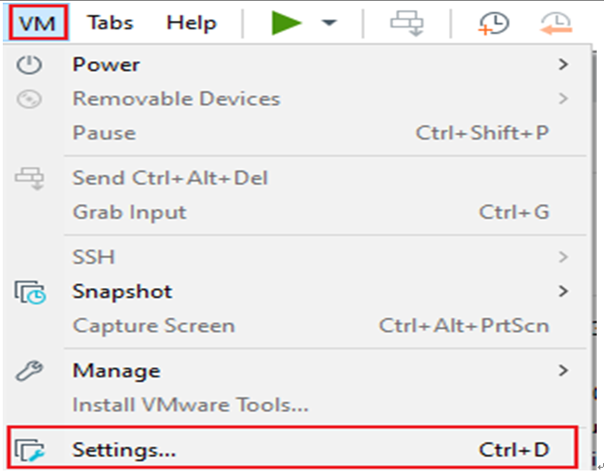

Linux5.15.147_User’s Compilation Manual
Document classification: □ Top secret □ Secret □ Internal information ■ Open
Copyright
The copyright of this manual belongs to Baoding Folinx Embedded Technology Co., Ltd. Without the written permission of our company, no organizations or individuals have the right to copy, distribute, or reproduce any part of this manual in any form, and violators will be held legally responsible.
Forlinx adheres to copyrights of all graphics and texts used in all publications in original or license-free forms.
The drivers and utilities used for the components are subject to the copyrights of the respective manufacturers. The license conditions of the respective manufacturer are to be adhered to. Related license expenses for the operating system and applications should be calculated/declared separately by the related party or its representatives.
Overview
This manual is designed to enable users of the Forlinx Embedded development board to quickly understand the compilation processof the products and familiarize themselves with the compilation methods of Forlinx products. The application needs to be cross-compiled on an ubuntu host before it can run on the development board.By following the methods provided in the compilation manual and performing practical operations, you will be able to successfully compile your own software code.
The manual will provide instructions for setting up the environment but there may be some unforeseen issues during the environment setup process. For beginners, it is recommended to use the pre-configured development environment provided by us. This will allow you to quickly get started and reduce development time.
Linux systems are typically installed in three ways: Dual system on a real machine, single system on a real machine, and virtual machine. Different installation methods have their advantages and disadvantages. This manual only provides methods to build ubuntu in a virtual machine.
Computer Hardware Requirements: It is recommended to have at least 16GB memory or above. It allows for allocating a sufficient memory to the virtual machine (recommended to allocate 10GB or above), while still leaving enough resources for other operations on Windows. Insufficient memory allocation may result in slower performance on Windows.
The manual is mainly divided into five chapters:
Chapter 1. is about the installation of virtual machine software, providing a brief introduction to the download and installation of VMware software;
Chapter 2. offers the loading of the Ubuntu system;
Chapter 3. is about the setup, configuration and installation of necessary tools for the Ubuntu system, as well as common issues related to the development environment;
Chapter 4. is the data and compilation method required for the compilation of the source code of the product;
Chapter 5. Configuration of the Qt compilation environment and methods for compiling programs;
A description of some of the symbols and formats associated with this manual:
Format |
Meaning |
|---|---|
// |
Interpretation of input instructions or output information |
Username@Hostname |
root@forlinx： Development board login account information, forlinx@ubuntu Development environment: Ubuntu account information. Users can use this information to determine the environment for functional operations. |
For example, when copying source code, you can use the “ls” command to view the source code files:
forlinx@ubuntu:~$ ls /mnt/hgfs/share/ //View files in a shared directory
OKT527-linux-sdk.tar.bz2
forlinx@ubuntu: The username is forlinx and the hostname is ubuntu, indicating that the user forlinx is used on the development environment ubuntu for operations.
// : Explanation of ls /run/media operation, no input required.
Application Scope
This software manual is applicable to the OK527 platform Linux 5.15 operating system of Forlinx.
Revision History
Date |
Manual Version |
Revision History |
|---|---|---|
28/04/2025 |
V1.0 |
User’s Compilation Manual Initial Version |
1. VMware Virtual Machine Software Installation
This chapter mainly introduces the installation of VMware virtual machines, using VMware Workstation 15 Pro v15.5.6 as an example to demonstrate the installation and configuration process of the operating system.
1.1 VMwareSoftware Download & Purchase
Visit Vmware official website https://www.vmware.com/cn.html for downloading Workstation Pro and obtaining the product key. VMware is a paid software that requires purchasing, or you can choose to use a trial version.
After the download is complete, double-click the installation file to start the installation program.
1.2 VMware Software Installation
Double-click the startup program to enter the installation wizard.
Click on “Next”.
Check the terms in the license agreement that I accept, then click “Next”.
Modify the installation location to the partition where you want to install the software on your computer, then click ‘“Next”.

Check and click on “Next”.
Check the box to add a shortcut, then click “Next”.
Click “Installation”.
Wait for the installation to complete.
Click “Finish” to try it out. If users need to use it for a long time, they need to buy it from the official and fill in the license.
2. Loading the Existing Ubuntu Development Environment
Note:
It is recommended for beginners to directly use the pre-built virtual machine environment provided by Forlinx, which already includes installed cross-compiler and Qt environment. After understanding this chapter, you can directly jump to the compilation chapter for further study.
The development environment provided for general users is: forlinx (username), forlinx (password). The superuser is: root (username), root (password).
Please ask your sales representative for the download link.
There are two ways to use a virtual machine environment in VMware: one is to directly load an existing environment, and the other is to create a new environment. First talk about how to load an existing environment.
First, download the development environment provided by Forlinx. There is an MD5 verification file in the development environment data. After downloading the development environment data, first performs MD5 verification on the compressed package of the development environment (02-User Data \ 01-Software Data \ 04-Tools \ md5sums-1.2.zip) to check whether the verification code is consistent with the verification code in the verification file. If they are consistent, the downloaded file is normal; if not, the file may be damaged and needs to be downloaded again.
Select OK527-VM15.5.6-ubuntu20.04 and right click to extract to the current folder or your own directory:
After the extraction is complete, you will obtain the development environment OK527-VM15.5.6-ubuntu20.04.
OK527-VM15.5.6-ubuntu20.04 folder in the OK527-VM15.5.6-ubuntu20.04.vmx is the file to be opened by the virtual machine.
Open the installed virtual machine.
Navigate to the directory where the recently extracted OK527-VM15.5.6-ubuntu20.04 virtual machine file is located, and double-click on the startup file to open it.
Turn on this virtual machine after loading is complete to run it and enter the system’s interface.
The default login account for automatic login in the development environment is “forlinx”.
3. New Ubuntu Development Environment Setup
Note: Beginners are not recommended to set up a system on their own. It is recommended to use an existing virtual machine environment. If you do not need to set up the environment, you can skip this section.
This chapter mainly explains the process of setting up the Ubuntu system and installing Qt Creator. If the user is not using Qt, the installation of Qt Creator can be ignored.
3.1 UbuntuSystem Setup
The version of Ubuntu we chose to install is 20.04, and the introduction and development in this maual are all carried out on Ubuntu20.04. First, go to the Ubuntu official website to get the Ubuntu 20.04 64-bit image. The download address is: [http://releases.ubuntu.com/20.04/](http://releases.ubuntu.com/20.04/)
Download “Ubuntu-20.04.6-desktop-amd64.iso” (you can download the version that you actually need; this is just an example with 20.04.6).
3.1.1 Ubuntu Virtual Machine Setup
Step 1: Open the VMware software and click on “Create New Virtual Machine”. Enter the following interface, check “Customize (Advanced)” and click “Next”:
Step 2: Select the compatibility of the corresponding VMware version. The version can be viewed in Help-> About VMware Workstation. Click “Next” after confirmation:
Select “Install program from disc image file”, then click “Next”；
Enter full name, user name and password and click “Next”:
Enter the virtual machine name and configuration installation location, and click “Next”:
To configure the number of cores, click “Next”:

To configure at least 8GB of memory, select Next:
Set the network type, use the default NAT form for networking, and click “Next”. Keep the default values for the remaining steps until you reach the step to specify the disk capacity.
Use the recommended I/O controller; click “Next”:
Use the recommended disk type; click “Next”:
Use the default options; create a new virtual disk and click “Next”:
Allocate a disk size of 80G and divide the virtual disk into multiple files, and click “Next”:

Click “Next” by default:
Click “Finish”:

The virtual machine creation is now complete.
Then click “Open this virtual machine” to start installing the image and wait patiently.
The ubuntu system installation is complete.
3.1.2 UbuntuBasic Configuration
3.1.2.1 VMware ToolsInstallation
VMware Tools will be installed automatically after the virtual machine is created. If it is not successful, follow the steps below.
If you do not install the tool, you cannot use copy-paste file drag and drop between the Windows host and the virtual machine.
First click on “Virtual Machine” on the VMware navigation bar, then click “Install VMware Tools” in the drop-down box.
Once done, enter Ubuntu and the VMware Tools CD will appear on your desktop and click into it.
Enter and see a compressed file VMwareTools-10.3.10-12406962.tar.gz (it may be different for different VM versions); copy the file under the home directory (i.e. the directory with the home personal username)
Press [Ctrl+Alt+T] to bring up the Terminal Command Interface and enter the command:
forlinx@ubuntu:~$ sudo tar xvf VMwareTools-10.3.10-12406962.tar.gz
After the extraction is complete, a file named “vmware-tools-distrib” will appear.
Go back to the terminal and enter:
cd vmware-tools-distrib
Enter the directory:
Input again:
sudo ./vmware-install.pl
Enter the password, and then start the installation. Enter yes when asked, and enter the default installation.
Once the VMware tools is complete, we can implement file copy and paste between Windows and Ubuntu.
3.1.2.2 Virtual Machine Full Screen Display
If the virtual machine is not able to be displayed in full screen, you can resolve this issue by clicking on “View” and selecting “Autofit Guest.” This will adjust the display to fit the screen automatically, enabling you to have a full-screen experience in the virtual machine.
Make most of the system settings in the location shown. A lot of the setup requirements on Ubuntu can be done here.
3.1.2.3 Virtual Machine Hibernation Settings
Also, the default hibernation is 5min, if you don’t want to set hibernation, just set it to Never by setting Power->Blank screen.
3.1.3 VMSwapfileSettings
The memory allocated when creating the virtual machine is 8GB. If the 8GB memory is not enough during compilation, the size of the swapfile needs to be modified.
forlinx@ubuntu:~$ sudo swapoff /swapfile
forlinx@ubuntu:~$ sudo dd if=/dev/zero of=/swapfile bs=1M count=16384
forlinx@ubuntu:~$ sudo mkswap /swapfile
forlinx@ubuntu:~$ sudo swapon /swapfile
3.1.4 Virtual Machines Network Settings
3.1.4.1 NATConnection Method
By default, after the virtual machine is installed, the network connection method is set to NAT, which shares the host machine’s IP address.
This configuration does not need to be changed when performing tasks like installing dependencies or compiling code.
When the VMware virtual NIC is set to NAT mode in a virtual machine, the network in the Ubuntu environment can be set to dynamic IP. In this mode the virtual NAT device and the host NIC are connected to communicate for Internet access. This is the most common way for our VM to access the external network.
3.1.4.2 Bridge Connection
When the VMware virtual NIC device is in bridge mode, the host NIC and the virtual machine NIC communicate through the virtual bridge, and the network IP and the host need to be set in the same network segment in the Ubuntu environment. If accessing an external network, you need to set the DNS to be consistent with the host NIC. If TFTP, SFTP and other servers are used, the network contact mode of the virtual machine needs to be set as the bridge mode.
3.2 Toolkit Installation
To install the necessary toolkit for T527N compilation, please execute the following command to install it, and make sure that the network can be used normally and you can access the external network before installation:
forlinx@ubuntu:~$ sudo apt-get update
forlinx@ubuntu:~$ sudo apt-get install openssh-server vim git fakeroot make automake \
autoconf libtool libssl-dev bc dosfstools mtools parted iproute2 kmod \
libyaml-dev device-tree-compiler python flex bison build-essential \
u-boot-tools libncurses-dev lib32stdc++6 lib32z1 libc6:i386 \
nodejs gyp ninja-build bison flex gperf ruby
3.3 Qt CreatorInstallation
Path: 02-User Information\01-Software Information\04-Tools\qt-opensource-linux-x64-5.12.9.run
Copy qt-opensource-linux-x64-5.12.9.run to any directory in the current user’s home directory and execute it:
forlinx@ubuntu:~$ chmod 777 qt-opensource-linux-x64-5.12.9.run
forlinx@ubuntu:~$ ./qt-opensource-linux-x64-5.12.9.run
The following interface will pop up. Click “Next” to enter the next step:
Click “Next” to go to the next step:
In the following interface, click “Browse…” to select the installation path of Qtcreator, after the selection is complete, click “Next” to enter the next step:
In the following screen, click “Next” to the next step:
Agree to the agreement and click “Next”:
Click Install to install:
After the installation is completed, the following interface will be displayed. Uncheck the option “Launch Qt Creator” “and click” Finish “to complete the installation steps of Qt Creator:
Go to the /home/forlinx/Qt5.12.9/Tools/QtCreator/bin/ directory of the actual qtcreator installation directory:
forlinx@ubuntu:~$ cd /home/forlinx/Qt5.12.9/Tools/QtCreator/bin/
Boot Qt Creator ：
forlinx@ubuntu:~/Qt5.12.9/Tools/QtCreator/bin $ sudo./qtcreator
[sudo] password for forlinx: forlinx //Enter the password of the forlinx user without any response
QStandardPaths: XDG_RUNTIME_DIR not set, defaulting to '/tmp/runtime-root'
QStandardPaths: XDG_RUNTIME_DIR not set, defaulting to '/tmp/runtime-root'
The Qt Creator tool screen appears. Qt Creator is installed.
3.4 Qt Compilation Environment Configuration
Path: User profile \ software profile \ 3-tools \ host. tar. gz
There are libraries and cross-compilation tools required for compiling Qt programs in the host. tar. gz.
The configuration steps are as follow:
1. Unzip the compilation environment zip;
Because the qmake tool depends on local paths, this toolkit can only be placed in a fixed path: /opt/. Avoid unrecognized due to source code path change
Unzip the tool kit
forlinx@ubuntu:~$ sudo tar -xf host.tar.gz -C /opt/
If you cannot find the compressed package, you can also compile the source code first and copy out/t527/okt527/buildroot/buildroot/host/to the/opt/directory
2. Qt Creator environment configuration
First open the Qt Creator software.
Go to the /home/forlinx/Qt5.12.9/Tools/QtCreator/bin/ directory of the actual qtcreator installation directory:
forlinx@ubuntu:~$ cd /home/forlinx/Qt5.12.9/Tools/QtCreator/bin/
Boot Qt Creator ：
forlinx@ubuntu:~/Qt5.12.9/Tools/QtCreator/bin $ sudo./qtcreator
[sudo] password for forlinx: forlinx //输入forlinx用户的密码，无回显
QStandardPaths: XDG_RUNTIME_DIR not set, defaulting to '/tmp/runtime-root'
QStandardPaths: XDG_RUNTIME_DIR not set, defaulting to '/tmp/runtime-root'
Start the Qt Creator program and click on the Tools->option:
Enter the Options interface, click “Kits” on the left side, then click the “Compilers” tab in the upper center, and click “Add->GCC->C++” on the right side, as shown in the figure:
Find “aarch64-none-linux-gnu-g + +” under/opt/host/bin, select it, click Open, and modify the Name
Follow the same method to add GCC compiler and click “Add->GCC->C” on the right side; as shown in the figure:
Find “aarch64-none-linux-gnu-gcc” under/opt/host/bin, select it, click Open, and modify the Name
Click on the Qt Versions tab and click on “Add”:
Find qmake in the directory /opt/host/bin, select it and click Open, add it and display it as below, click “ Apply”.
Click the Kits tab, click Add on the right, add a new kit, modify it according to the following figure, and click “Apply”.
3.5 VMwareSolution to Error Reporting
Error 1: Unable to connect to MKS. Too many socket connection attempts; giving up.
Solution:
My Computer -> Right click -> Management -> Services and Applications -> Services: turn on all the services about VMware.
After the service starts successfully, restart the virtual machine; or hang the virtual machine first, and when the service starts, continue to run the hung virtual machine;
Error 2: Internal error
Solution: Refer to solution 1
Error 3: Unable to install service VMware Authorization Service (VMAuthdService)
Solution:
win+R
Enter services.msc
Then find the service and start it up as an authorization and authentication service for starting and accessing virtual machines.
WMI must start first.
Error 4：Failed to install the hcmon driver
Solution: Delete C:\Windows\System32\drivers\hcmon.sys, then install again.
Error 5: Intel VT-x in disabled state
Solution:
①Enter the BIOS screen while booting (F2 or F12)
②configuration–》intel virtual technology–》–“change disabled to enabled–“save the setting, exit and reboot.
③Reopen VMware and turn on the virtual machine.
If that doesn’t work, just turn the firewall off and reopen the VM. (varies by machine)
Error 6: The virtual machine appears to be in use… Acquiring Ownership (T)
Solution:
①Shut down the virtual machine
② Enter the storage directory of the virtual machine and delete the *.lck file, where lck represents the locked file.
③ Open the Windows Task Manager and kill the VMware process
④Reopen the virtual machine
Error 7: Failed to lock file
Solution:
①Go to the virtual machine’s storage directory
②Delete.vmem.lck，.vmdk.lck，*.vmx.lck
③Reopen the VM, you can enter the VM normally
Error 8：The virtual machine could not be started because there was not enough memory available on the host.
Solution:
The virtual machine does not have enough memory to run the image’s maximum requirements; increase the virtual machine’s memory and reboot the virtual machine
4. Ubuntu Compilation
Note: Please do not skip this paragraph.
The development environment is the hardware and software platform that developers need during the development process. Development environment is not a fixed style . In the previous article, it explains in detail how to build an embedded Linux development environment. If you already know a lot about embedded development, you can build the environment according to your needs. If you encounter some problems, you can search for related information from some big Linux forums and websites to solve them. The operations mentioned in this section are performed on the development environment provided by us, which has been tested by Forlinx. If you are not very familiar with embedded development, recommend you to use the environment provided by Forlinx.
**The development environment provided for general users is: forlinx (username), forlinx (password). **
The superuser is: root (username), root (password).
4.1 Preparation Before Startup
4.1.1 Versions
Virtual Machine Software: Vmware 15.1.0
Recommended Development Environment OS: Ubuntu 20.04 64-bit
Cross toolchain: gcc-arm-10.3-2021.07-x86 _ 64-aarch64-none-linux-gnu (kernel)
aarch64-buildroot-linux-gnu_sdk-buildroot（应用）
Bootloader version: u-boot-2018.07
Kernel version: linux-5.15.147
Development board QT version: qt5.15.8
4.1.2 Source Code Copy and Release
Kernel source code path: user data \ software data \ 2-image and source code \ 1-source code \ OKT527-linux-sdk 1.3.tar.bz2.
1. Copy Source Code
OKT527-linux-sdk1.3.tar.bz2 includes the toolchain, user SDK, Linux kernel, file system, source code for test programs, and some tools.
forlinx@ubuntu:~$ mkdir /home/forlinx/work //Create working path
Copy the source package to the virtual machine /home/forlinx/work directory.
You can directly drag and drop the source package from your computer to a folder on the desktop of the virtual machine, or use a shared folder to copy it using the command; here we focus on the use of shared folders
There are many kinds of file transfers between ubuntu and Windows hosts. After installing VMware Tools, you can set up a virtual machine shared folder to mount the file directory of the Windows host to ubuntu for file sharing.
Click “Virtual Machine” on the menu bar and select “Settings”.

Click “Options”, enable “Shared Folders”, set the shared directory on the Windows host, and click “OK”.
After completing the virtual machine’s file sharing setup, place the source code package OKT527-linux-sdk1.3.tar.bz2 into the Windows host’s shared folder. Here, we’ll name it “share”.
The shared folder is in the mount directory /mnt/hgfs/share in ubuntu; view the files in the mount directory.
forlinx@ubuntu:~$ ls /mnt/hgfs/share/ //View files in the shared directory
OKT527-linux-sdk1.3.tar.bz2
Copy the source code from the shared folder to ubuntu’s /home/forlinx/work directory for md5 checksum:
forlinx@ubuntu:~$ cp /mnt/hgfs/share/OKT527-linux-sdk1.3.tar.bz2.* /home/forlinx/work/
forlinx@ubuntu:~$ cd /home/forlinx/work
forlinx@ubuntu:~/work$ md5sum OKT527-linux-sdk1.3.tar.bz2.*
The returned md5 checksum is the same as the one in the profile, so you can unzip the source code:
forlinx@ubuntu:~/work$ cat OKT527-linux-sdk1.3.tar.bz2.0* | tar jxv
4.1.3 Common File Path of Source Code
OK527-C platform, the software configuration file path (starting under the SDK source code OKT527-linux-sdk path) is as follows:
Document type |
path |
|---|---|
Kernel configuration file |
device/config/chips/t527/configs/okt527/linux-5.15/bsp_defconfig |
Device tree file |
kernel/linux-5.15/bsp/configs/linux-5.15/sun55iw3p1.dtsi |
kernel/linux-5.15/arch/arm64/boot/dts/allwinner/OKT527-C-Common.dtsi |
|
kernel/linux-5.15/arch/arm64/boot/dts/allwinner/OKT527-C-Linux.dts |
|
sysconfig.fex |
device/config/chips/t527/configs/okt527/sys_config.fex |
File system source files. |
File add path |
uboot environment variable settings file |
Device/config/chips/t527/configs/okt527/buildroot/env.cfg You can modify this file if you need to modify or add default environment variables. |
OK527-C platform, the test program path (SDK source code starts under OKT527-linux-sdk path) is as follows:
platform/framework/auto/cmd_demo Command Line Test Program Source Directory
platform/framework/auto/qt_demo Qt test program source directory
Source code path |
||
|---|---|---|
qt-demo |
4G |
platform/forlinx/forlinx_qt_demo/4g |
ADC |
platform/forlinx/forlinx_qt_demo/adc |
|
Backlight |
platform/forlinx/forlinx_qt_demo/backlight |
|
SQL |
platform/forlinx/forlinx_qt_demo/books |
|
Browser |
platform/forlinx/forlinx_qt_demo/browser |
|
Camera test |
platform/forlinx/forlinx_qt_demo/camera |
|
Sound recording |
platform/forlinx/forlinx_qt_demo/fltest_qt_audiorecorder |
|
Video play |
platform/forlinx/forlinx_qt_demo/fltest_qt_musicplayer |
|
Key test |
platform/forlinx/forlinx_qt_demo/keypad |
|
Desktop |
platform/forlinx/forlinx_qt_demo/matrix-browser |
|
Network Configuration |
platform/forlinx/forlinx_qt_demo/network |
|
ping |
platform/forlinx/forlinx_qt_demo/ping_test |
|
platform/forlinx/forlinx_qt_demo/qopenglwidget |
||
rtc |
platform/forlinx/forlinx_qt_demo/rtc |
|
Spi |
platform/forlinx/forlinx_qt_demo/spitest |
|
Serial test |
platform/forlinx/forlinx_qt_demo/terminal |
|
Watchdog |
platform/forlinx/forlinx_qt_demo/watchdog |
|
WiFi |
platform/forlinx/forlinx_qt_demo/wifi |
|
cmd-demo |
Video Hardware Decoding |
platform/forlinx/forlinx_cmd_demo/decoderTest |
Video Hardware Encoding |
platform/forlinx/forlinx_cmd_demo/encoder_test |
|
Clear screen |
platform/forlinx/forlinx_cmd_demo/fbinit_test |
|
GPADC |
platform/forlinx/forlinx_cmd_demo/fltest_adc |
|
Backlight |
platform/forlinx/forlinx_cmd_demo/fltest_backlight |
|
Key test |
platform/forlinx/forlinx_cmd_demo/fltest_keytest |
|
SPI Test |
platform/forlinx/forlinx_cmd_demo/fltest_spidev_test |
|
UART |
platform/forlinx/forlinx_cmd_demo/fltest_uarttest |
|
USB camera |
platform/forlinx/forlinx_cmd_demo/fltest_usbcam |
|
Watchdog |
platform/forlinx/forlinx_cmd_demo/fltest_watchdog |
|
ec20 4G |
platform/forlinx/forlinx_cmd_demo/quectelCM |
|
wifi |
platform/forlinx/overlay_rootfs/usr/bin/fltest_wifi.sh |
|
Wifi-ap |
platform/forlinx/overlay_rootfs/usr/bin/fltest_hostap.sh |
|
gpio |
platform/forlinx/overlay_rootfs/usr/bin/fltest_gpio.sh |
|
Desktop |
platform/forlinx/overlay_rootfs/etc/init.d/S60Matrix_Browser |
4.2 Source Code Compilation
4.2.1 Full Compilation
Full compilation refers to the unified compilation of source code, including kernel source code, library files, applications, file system packaging, and so on.
First select the configuration:
forlinx@ubuntu:~$ cd /home/forlinx/work/OKT527-linux-sdk //Enter source code path
forlinx@ubuntu:~/work/OKT527-linux-sdk$ ./build.sh config //Execute configure commands
forlinx@ubuntu:~/work/OKT527-linux-sdk$ ./build.sh config
========ACTION List: mk_config ;========
options :
All available board:
0. okt527
Choice [okt527]:
Setup BSP files
.
…
Run the compilation script for full compilation:
forlinx@ubuntu:~/work/OKT527-linux-sdk$ ./build.sh
Note: If compilation of qt_webengine stalls or results in errors, please switch to a more powerful host machine to run the virtual machine environment.
or:
Delete OKT527-linux-sdk1.3/out/t527/okt527/buildroot/buildroot/build/qt5webengine-5.15.8/ directory
And switch to OKT527-linux-sdk1.3/buildroot/buildroot-202205/package/qt5/qt5webengine directory
Modify the qt5web engine. mk films
**QT5WEBENGINE_ENV += NINJAFLAGS="-j32"**
modify to
**QT5WEBENGINE_ENV += NINJAFLAGS="-j8"**
Continue to execute the build. sh to compile.
After the source code is compiled you need to generate an image to package the various files and configuration files generated by the compilation.
Execute the pack command to generate the image file:
forlinx@ubuntu:~/work/OKT527-linux-sdk$ ./build.sh pack
…
Dragon execute image.cfg SUCCESS !
----------image is at----------
655M ~/work/OKT527-linux-sdk/out/t527_linux_okt527_uart0.img
pack finish
4.2.2 Individual Kernel Device Tree Compilation
Compile the kernel alone only for the kernel source code to compile, affecting the driver, applicable to only modify the kernel to compile.
After selecting the configuration according to the previous method:
forlinx@ubuntu:~$ cd /home/forlinx/work/OKT527-linux-sdk
forlinx@ubuntu:~/work/OKT527-linux-sdk$ ./build.sh kernel //Execute compile kernel command
…
Copy modules to target ...
15985 blocks
28830 blocks
bootimg_build
Copy boot.img to output directory ...
sun55iw3p1 compile all(Kernel+modules+boot.img) successful
…
forlinx@ubuntu:~/work/OKT527-linux-sdk$ ./build.sh pack
4.2.3 Individual Test Program Compilation
When modifying the test program separately, you can compile only the test program to reduce the amount of compilation.
forlinx@ubuntu:~$ cd /home/forlinx/work/OKT527-linux-sdk
forlinx@ubuntu:~/work/OKT527-linux-sdk$ source .buildconfig //Configuration before compilation
forlinx@ubuntu:~/work/OKT527-linux-sdk$ ./platform/forlinx/build.sh
4.2.4 Individual U-Boot Compilation
Compile uboot separately using the following command.
forlinx@ubuntu:~/work/OKT527-linux-sdk$ ./build.sh brandy
forlinx@ubuntu:~/work/OKT527-linux-sdk$ ./build.sh pack
Note: The content of uboot is not open source, and it will report an error when compiled separately. Just ignore it.
4.2.5 Individual Filesystem Compilation
During the full compilation process, the file system will not be compiled and needs to be modified and compiled separately. Enter the file system directory to compile and configure modifications.
The compilation instructions are as follows, using the compile script in the buildroot-202205.
forlinx@ubuntu:~/work/OKT527-linux-sdk/buildroot/buildroot-202205$ ./build.sh
If you want to modify the configuration, you can do so as follows. Use the above instructions to compile after the modification is completed.
forlinx@ubuntu:~/work/OKT527-linux-sdk/buildroot/buildroot-202205$ make OKT527-C-Linux_defconfig ARCH=arm64 //Read the current configuration
forlinx@ubuntu:~/work/OKT527-linux-sdk/buildroot/buildroot-202205$ make menuconfig //Enter the graphic configuration interface to modify the configuration
forlinx@ubuntu:~/work/OKT527-linux-sdk/buildroot/buildroot-202205$ cp ../../out/t527/okt527/buildroot/buildroot/.config configs/OKT527-C-Linux_defconfig //Save the modified content as the default configuration
4.2.6 OKT527-linux-sdk Clearance
This operation clears all intermediate files. However, it does not affect the source files, including those that have already had changes made to them.
forlinx@ubuntu:~$ cd /home/forlinx/work/OKT527-linux-sdk
forlinx@ubuntu:~/work/OKT527-linux-sdk$ ./build.sh clean //Execute the clear command
4.2.7 Boot Logo Replacement
Replace device/config/chips/t527/boot-resource/boot-resource/bootlogo.bmp
The image is in bmp format, 720x480 resolution, with the file name “bootlogo.bmp”.
Repackage the image
forlinx@ubuntu:~/work/OKT527-linux-sdk$ ./build.sh pack
4.2.8 Individual Development Board Firmware Update
After compiling the image, uboot, device tree, and kernel can be updated separately, and uboot, device tree file boot _ package. fex, and kernel file boot. fex can be copied from the out/pack _ out/.
Here, a USB drive is used for testing, with files placed on the USB drive and mounted to/run/media/sda1/. You can also transfer files to the development board through the network port
Uboot and device tree updates
dd if=/run/media/sda1/boot_package.fex of=/dev/mmcblk0 seek=32800
dd if=/run/media/sda1/boot_package.fex of=/dev/mmcblk0 seek=24576
Kernel update
dd if=/run/media/sda1/boot.fex of=/dev/mmcblk0p3 conv=fsync
The entire file system update is not supported for the time being. If necessary, the required files can be transferred by U disk or SSH.
4.3 Qt Configuration and Use
The OKT527-linux-sdk1.3.tar.bz2 provided by Forlinx offers a complete development dependency environment for Qt 5.15.8. The development environment has already installed Qt Creator 5.12.9. Please set up the Qt Creator 5.15.8 environment on your own by following the methods described previously.
4.3.1 OKT527-linux-sdk Installation
Please refer to Chapter 3 for SDK installation and full compilation.
4.3.2 Qt Creator Environment Configuration
Please refer to Chapter 3. for installation and configuration.
4.3.3 Qt Creator Development Examples
Open the Qt Creator software.
forlinx@ubuntu:~$ cd /home/forlinx/Qt5.12.9/Tools/QtCreator/bin/
forlinx@ubuntu:~/qtcreator-4.7.0/bin$ sudo ./qtcreator
Start the Qt Creator program, enter the Qt Creator interface, click “File” -> “New File or Project” to create a new project, select “ Application (Qt)” -> “Qt Widgets Application”, then click “Choose” in the right corner. Application (Qt)”->”Qt Widgets Application”, then click “Choose” in the lower right corner:
In the following interface, change the name of the new project to “helloworld”, select the installation path /home/forlinx, and then click “Next”:
Select qmake and click “Next” to continue.
In the following interface, you can modify the Class name and Base class as required. The default is used here, and then click “Next”:
Translation files can be selected, and languages can be selected if there is a need for multi-language support. Use the default here and click “Next”:

In the following screen, select “OK527” as the kit of the current project, and then click “Next”:
In the following interface, click “Finish” to complete the new project:
When the creation of the new project is complete, the following window can be displayed:
When the program is written, click the hammer icon in the lower left corner to cross-compile and copy the compiled executable program to the development board to test the application.
4.3.4 Qt Creator FQA
Open the Qt Creator integrated development environment from the command line or through a shortcut. Once launched, you will see a interface similar to the one below:
The “Design” button, “Project” button, and the “Build and Debug” area on the left side will only become available after opening or creating a project.
There are the positioning tools and output panes underneath the QtCreator, which are used when writing project code , running and debugging programs. There are seven output panes: Issues (problems with the project build), Search Results (searches for the contents of the project file), Application Output (display of runtime and debugging information), Compile Output (compilation and linking commands and their output information), QML/JS Console (the QML command window), Summary Information (a summary of the project’s information), and Version Control (a system of control of the version.)
Click the hammer button in the lower left corner and find that there is no compilation information. The solution is as follows:
By default, the selected output pane is 1 (Issues) for viewing. If you need to check the compilation information, you will need to select 4 (Compile Output) in the output pane location.
Build Debugging
2. The solution to the issue of the gray debug/run button in Qt Creator is as follows:
This problem occurs because there is a problem configuring the C, C++ and Qt versions in the kits suite, maybe there is a problem with the paths, maybe you haven’t done a full compilation, just change the editor language.
Please check if the cross-compiler path configuration in the checkbox is correct.
For the specific configuration method, refer to the chapter “3.4 Configuration of Qt Compilation Environment”.